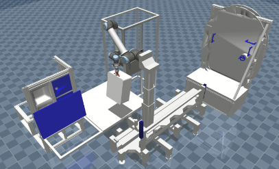
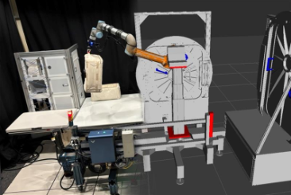

 |
The iMETRO Dynamic Simulation: An Open-Source Simulator for Intravehicular Space Robotics ResearchNikki Hart, Nathan Dunkelberger, Erik Holum, Lydia E. Kavraki, Emma Zemler, Shaun AzimiICRA 2026 Pre-print |
 |
Design of the iMETRO Facility: A Platform for Intravehicular Space Robotics ResearchNathan Dunkelberger, Emily Sheetz, Connor Rainen, Jodi Graf, Nikki Hart, Emma Zemler, Shaun AzimiUbiquitous Robots 2025 Paper |